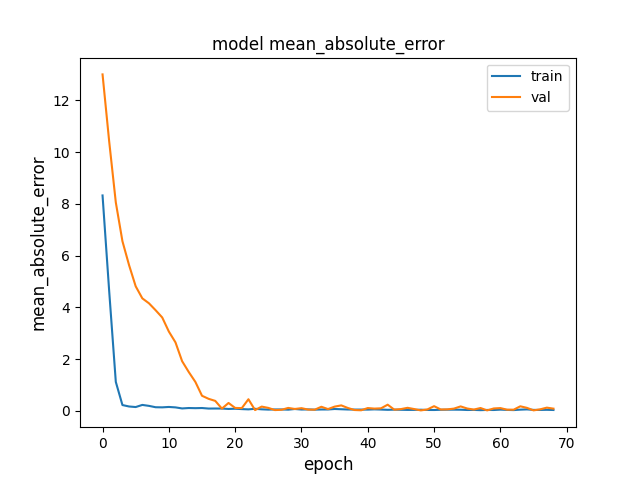

Finding the correct neural network architecture for your time series regression task is crucial because the architecture directly influences the model's ability to understand and capture the underlying patterns in the data. The right architecture ensures that the model can efficiently learn the relevant features and relationships within the time series data, leading to better predictive performance. The task requires experimentation, thus different architecture patterns will be test. The first in the series will be convolutional layers.
Prior to passing the data to the model it requires some preprocessing. In this case that would be extracting features / target values, data normalization and ajusting the shape. Data normalization accelerates training convergence by maintaining consistent gradients, prevents numerical instability caused by extreme values, and ensures fair treatment of features regardless of scale, leading to improved model performance and generalization. A standard tool might be (sklearn MinMaxScaler)[https://scikit-learn.org/stable/modules/generated/sklearn.preprocessing.MinMaxScaler.html]
def get_xy(data):
x = data.drop(configur.target, axis=1)
y = data[configur.target]
util.logger.info(f"x shape: {x.shape}, y shape: {y.shape}")
return x,y
def normalize_input(x, option="minmax"):
if option=="minmax":
scaler = MinMaxScaler()
x = scaler.fit_transform(x)
if option=="keras":
layer = tf.keras.layers.Normalization(axis=None)
layer.adapt(x)
x = layer(x)
return x
def split_data(x, y):
n = int(len(x) * configur.train_test_size)
xtr, xvl = x[:n, :], x[n:, :]
ytr, yvl = y[:n], y[n:]
util.logger.info(f"data splited, train/test shapes: {xtr.shape, ytr.shape}/{xvl.shape, yvl.shape}")
return xtr, xvl, ytr, yvl
def preprocess(data):
x,y = get_xy(data)
x = normalize_input(x)
xtr, xts, ytr, yts = split_data(x, y)
xtr = xtr.reshape(xtr.shape[0], xtr.shape[1], 1)
xts = xts.reshape(xts.shape[0], xts.shape[1], 1)
return xtr, xvl, ytr, yvl
The model is designed for 1D input data and comprises multiple convolutional layers followed by batch normalization and rectified linear unit (ReLU) activation functions. Each convolutional layer has 128 filters with a kernel size of 3 and "same" padding to maintain input shape. After the convolutional layers, there's a Global Average Pooling layer that averages the features along the time dimension. The model concludes with a dense output layer with a single neuron and ReLU activation, suitable for regression tasks.
def make_convolution_model(input_shape):
input_layer = keras.layers.Input(shape=input_shape)
conv1 = keras.layers.Conv1D(filters=128, kernel_size=3, padding="same")(input_layer)
conv1 = keras.layers.BatchNormalization()(conv1)
conv1 = keras.layers.ReLU()(conv1)
conv2 = keras.layers.Conv1D(filters=128, kernel_size=3, padding="same")(conv1)
conv2 = keras.layers.BatchNormalization()(conv2)
conv2 = keras.layers.ReLU()(conv2)
conv3 = keras.layers.Conv1D(filters=128, kernel_size=3, padding="same")(conv2)
conv3 = keras.layers.BatchNormalization()(conv3)
conv3 = keras.layers.ReLU()(conv3)
gap = keras.layers.GlobalAveragePooling1D()(conv3)
output_layer = keras.layers.Dense(1, activation="relu")(gap)
return keras.models.Model(inputs=input_layer, outputs=output_layer)
Within the model fitting process several callbakcs are applied:
- ModelCheckpoint: saves the best model weights based on validation loss. This is extremely useful because it enables you to restore the model to its best state if training is interrupted or if overfitting occurs
- ReduceLROnPlateau: dynamically adjusts the learning rate of the optimizer when a plateau in validation loss is detected
- EarlyStopping: monitors a specific metric (usually validation loss) and stops the training if the metric doesn't improve for a given number of epochs (patience=20 in this code).
def fit_convolution(data):
st = time.time()
util.logger.info(f"start fitting convolution model")
x,y = get_xy(data)
x = normalize_input(x)
xtr, xts, ytr, yts = split_data(x, y)
xtr = xtr.reshape(xtr.shape[0], xtr.shape[1], 1)
xts = xts.reshape(xts.shape[0], xts.shape[1], 1)
model = make_convolution_model(xtr.shape[1:])
callbacks = [
keras.callbacks.ModelCheckpoint(
"models/conv_model.h5", save_best_only=True, monitor="val_loss"
),
keras.callbacks.ReduceLROnPlateau(
monitor="val_loss", patience=20, factor=0.1,min_lr = 0.0001
),
keras.callbacks.EarlyStopping(monitor="val_loss", patience=20)
]
model.compile(
optimizer=keras.optimizers.Adam(learning_rate=0.001),
loss=keras.losses.Huber(delta=1.0),
metrics=["mean_absolute_error"]
)
history = model.fit(
xtr, ytr,
batch_size=configur.batch_size,
epochs = configur.epochs,
callbacks = callbacks,
validation_split=0.2,
verbose=1
)
# test
test_loss, test_acc = model.evaluate(xts, yts)
util.logger.info(f"test loss: {test_loss}, test acc: {test_acc}")
# plot hisotry
metric = "mean_absolute_error"
plt.figure()
plt.plot(history.history[metric])
plt.plot(history.history["val_" + metric])
plt.title("model " + metric)
plt.ylabel(metric, fontsize="large")
plt.xlabel("epoch", fontsize="large")
plt.legend(["train", "val"], loc="best")
plt.show()
util.logger.info(f"end fitting convolution model, time: {time.time() - st}")
return model, history
The resulting metrics on the test sample is: *test loss: 0.0005519497790373862, test acc: 0.02719767577946186*. The fit model process can be traced via the metrics history:
